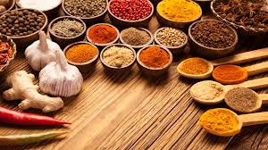
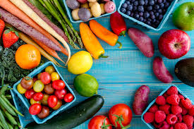

My Salubrious Kitchen
...Cooking is a Good Hobby...
India is famous for few types of spices
Vegetables are good for health.
Breakfast like a King, Lunch like a Prince and Dine like a Pauper.

Follow Below Cooking Tips:
- If you need to use oil, try cooking sprays or apply a small amount of oil with a pastry brush.
- Cook in liquids (such as stock, wine, lemon juice, fruit juice, vinegar or water) instead of oil.
- Use low-fat yoghurt, low-fat milk, evaporated skim milk or cornstarch instead of cream in sauces or soups.
- When browning vegetables, put them in a hot pan then spray with oil, rather than adding the oil first to the pan.
- An alternative to browning vegetables by pan-frying is to cook them first in the microwave, then crisp them under the grill for a minute or two.
- Use pesto, salsas, chutneys and vinegars in place of sour creams, butter and creamy sauces.
- When you make a stew or soup, refrigerate leftovers and skim off the fat with a spoon before reheating and serving.
- Eat fish regularly. Try different ways of cooking such as baking, broiling, grilling and poaching to add variety.
- Include plant foods as sources of protein, including soybeans, pinto beans, lentils and nuts.
- Replace higher-fat cheeses with lower-fat options such as reduced-fat feta and part-skim mozzarella.
- Select lean cuts of beef and pork, especially cuts with "loin" or "round" in their name.
- Cut back on processed meats high in saturated fat, such as hot dogs, salami and bacon.
- Bake, broil, roast, stew or stir-fry lean meats, fish or poultry.
- Drain the fat off of cooked, ground meat.